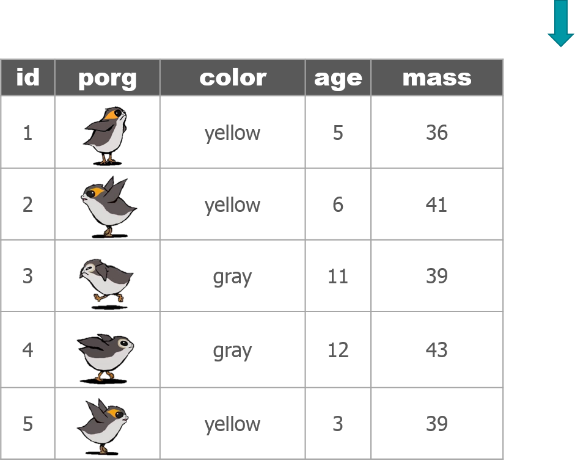
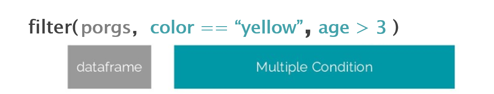
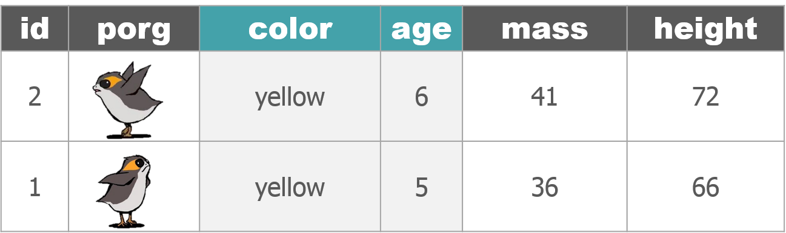
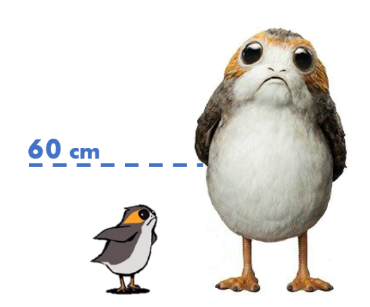
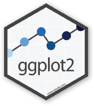

Data exploration
1 dplyr

You’ve unlocked a new package!
dplyr is the go-to tool for exploring, re-arranging, and summarizing data.
Use install.packages("dplyr") to add dplyr to your library.
Then try loading the package from your library to test if it was installed.
library(dplyr)Get to know your data frame
Use these functions to describe your data.
Data frame info
| Function | Information | |
|---|---|---|
names(scrap) |
column names | |
nrow(...) |
number of rows | |
ncol(...) |
number of columns | |
summary(...) |
summary of all column values (ex. max, mean, median) | |
glimpse(...) |
column names + a glimpse of first values (requires dplyr package) |
2 glimpse() & summary()
Let’s read the scrap data into R and take a look.
library(readr)
library(dplyr)
scrap <- read_csv("https://mn-r.netlify.com/data/starwars_scrap_jakku.csv")glimpse() shows you the type of data you have and gives you a sample of values from each column.
# View your whole dataframe and the types of data it contains
glimpse(scrap)## Rows: 1,132
## Columns: 7
## $ receipt_date <chr> "4/1/2013", "4/2/2013", "4/3/2013", "4/4/2013", "4/5/2…
## $ item <chr> "Flight recorder", "Proximity sensor", "Vitus-Series A…
## $ origin <chr> "Outskirts", "Outskirts", "Reestki", "Tuanul", "Tuanul…
## $ destination <chr> "Niima Outpost", "Raiders", "Raiders", "Raiders", "Nii…
## $ amount <dbl> 887, 7081, 4901, 707, 107, 32109, 862, 13944, 7788, 10…
## $ units <chr> "Tons", "Tons", "Tons", "Tons", "Tons", "Tons", "Tons"…
## $ price_per_pound <dbl> 590.93, 1229.03, 225.54, 145.27, 188.28, 1229.03, 1485…summary() gives you a quick report of your numeric data.
# Summary gives us the means, mins, and maxima
summary(scrap)## receipt_date item origin destination
## Length:1132 Length:1132 Length:1132 Length:1132
## Class :character Class :character Class :character Class :character
## Mode :character Mode :character Mode :character Mode :character
##
##
##
##
## amount units price_per_pound
## Min. : 65 Length:1132 Min. : 145.3
## 1st Qu.: 1544 Class :character 1st Qu.: 259.6
## Median : 4099 Mode :character Median : 790.7
## Mean : 18751 Mean : 3811.7
## 3rd Qu.: 7475 3rd Qu.: 1496.7
## Max. :2971601 Max. :579215.3
## NA's :910 NA's :910Explore!
Try some more of the dataframe description functions.
nrow( ____ )
ncol( ____ )
names( ____ )Your analysis toolbox
dplyr is the hero for most analysis tasks. With these six functions you can accomplish just about anything you want with your data.
| Function | Job |
|---|---|
select() |
Select individual columns to drop or keep |
arrange() |
Sort a table top-to-bottom based on the values of a column |
filter() |
Keep only a subset of rows depending on the values of a column |
mutate() |
Add new columns or update existing columns |
summarize() |
Calculate a single summary for an entire table |
group_by() |
Sort data into groups based on the values of a column |
3 Porg tables
A poggle of porgs volunteered to help us demo the dplyr functions.



 
4 select()
Use the select() function to:
- Drop columns you no longer need
- Pull-out a few columns to create a new table
- Rearrange or change the order of columns
Drop columns with a minus sign: -col_name
library(dplyr)
library(readr)
scrap <- read_csv("https://mn-r.netlify.app/data/starwars_scrap_jakku.csv")
# Drop the destination column
select(scrap, -destination)## # A tibble: 1,132 × 6
## receipt_date item origin amount units price…¹
## <chr> <chr> <chr> <dbl> <chr> <dbl>
## 1 4/1/2013 Flight recorder Outskirts 887 Tons 591.
## 2 4/2/2013 Proximity sensor Outskirts 7081 Tons 1229.
## 3 4/3/2013 Vitus-Series Attitude Thrusters Reestki 4901 Tons 226.
## 4 4/4/2013 Aural sensor Tuanul 707 Tons 145.
## 5 4/5/2013 Electromagnetic discharge filter Tuanul 107 Tons 188.
## 6 4/6/2013 Proximity sensor Tuanul 32109 Tons 1229.
## 7 4/7/2013 Hyperdrive motivator Tuanul 862 Tons 1485.
## 8 4/8/2013 Landing jet Reestki 13944 Tons 1497.
## 9 4/9/2013 Electromagnetic discharge filter Cratertown 7788 Tons 188.
## 10 4/10/2013 Sublight engine Outskirts 10642 Tons 7211.
## # … with 1,122 more rows, and abbreviated variable name ¹price_per_pound
## # ℹ Use `print(n = ...)` to see more rowsDrop multiple columns
Use -c(col_name1, col_name2) or -col_name1, -col_name2 to drop multiple columns.
# Drop the destination and units columns
select(scrap, -c(destination, units, amount))## # A tibble: 1,132 × 4
## receipt_date item origin price_per_pound
## <chr> <chr> <chr> <dbl>
## 1 4/1/2013 Flight recorder Outskirts 591.
## 2 4/2/2013 Proximity sensor Outskirts 1229.
## 3 4/3/2013 Vitus-Series Attitude Thrusters Reestki 226.
## 4 4/4/2013 Aural sensor Tuanul 145.
## 5 4/5/2013 Electromagnetic discharge filter Tuanul 188.
## 6 4/6/2013 Proximity sensor Tuanul 1229.
## 7 4/7/2013 Hyperdrive motivator Tuanul 1485.
## 8 4/8/2013 Landing jet Reestki 1497.
## 9 4/9/2013 Electromagnetic discharge filter Cratertown 188.
## 10 4/10/2013 Sublight engine Outskirts 7211.
## # … with 1,122 more rows
## # ℹ Use `print(n = ...)` to see more rowsKeep only 3 columns
# Keep item, amount and price_per_pound columns
select(scrap, item, amount, price_per_pound)## # A tibble: 1,132 × 3
## item amount price_per_pound
## <chr> <dbl> <dbl>
## 1 Flight recorder 887 591.
## 2 Proximity sensor 7081 1229.
## 3 Vitus-Series Attitude Thrusters 4901 226.
## 4 Aural sensor 707 145.
## 5 Electromagnetic discharge filter 107 188.
## 6 Proximity sensor 32109 1229.
## 7 Hyperdrive motivator 862 1485.
## 8 Landing jet 13944 1497.
## 9 Electromagnetic discharge filter 7788 188.
## 10 Sublight engine 10642 7211.
## # … with 1,122 more rows
## # ℹ Use `print(n = ...)` to see more rowsSelect everything() else
Select also works to change the order of columns.
The code below puts the item column first, and then the units and amount columns directly after item. We then add evertyhing() to keep evertyhing else the same.
# Make the `item`, `units`, and `amount` columns the first three columns
# Leave `everything()` else in the same order
select(scrap, item, units, amount, everything())## # A tibble: 1,132 × 7
## item units amount receip…¹ origin desti…² price…³
## <chr> <chr> <dbl> <chr> <chr> <chr> <dbl>
## 1 Flight recorder Tons 887 4/1/2013 Outsk… Niima … 591.
## 2 Proximity sensor Tons 7081 4/2/2013 Outsk… Raiders 1229.
## 3 Vitus-Series Attitude Thrusters Tons 4901 4/3/2013 Reest… Raiders 226.
## 4 Aural sensor Tons 707 4/4/2013 Tuanul Raiders 145.
## 5 Electromagnetic discharge filter Tons 107 4/5/2013 Tuanul Niima … 188.
## 6 Proximity sensor Tons 32109 4/6/2013 Tuanul Trade … 1229.
## 7 Hyperdrive motivator Tons 862 4/7/2013 Tuanul Trade … 1485.
## 8 Landing jet Tons 13944 4/8/2013 Reest… Niima … 1497.
## 9 Electromagnetic discharge filter Tons 7788 4/9/2013 Crate… Raiders 188.
## 10 Sublight engine Tons 10642 4/10/20… Outsk… Niima … 7211.
## # … with 1,122 more rows, and abbreviated variable names ¹receipt_date,
## # ²destination, ³price_per_pound
## # ℹ Use `print(n = ...)` to see more rows5 Sort with arrange()
Rey wants to know what the highest priced items are. Use arrange() to find the highest priced scrap item and see which origins might have a lot of them.
# Arrange scrap items by price
scrap <- arrange(scrap, price_per_pound)
# View the top 6 rows
head(scrap)## # A tibble: 6 × 7
## receipt_date item origin destination amount units price_per…¹
## <chr> <chr> <chr> <chr> <dbl> <chr> <dbl>
## 1 4/4/2013 Aural sensor Tuanul Raiders 707 Tons 145.
## 2 5/22/2013 Aural sensor Outskirts Niima Outpost 3005 Tons 145.
## 3 5/23/2013 Aural sensor Tuanul Raiders 6204 Tons 145.
## 4 6/4/2013 Aural sensor Tuanul Raiders 3120 Tons 145.
## 5 6/10/2013 Aural sensor Blowback Town Niima Outpost 2312 Tons 145.
## 6 6/20/2013 Aural sensor Outskirts Trade caravan 6272 Tons 145.
## # … with abbreviated variable name ¹price_per_poundWhat, only
145 credits!? That’s not much at all. Oh wait…that’s the smallest one on top.
Put the BIG things first
To arrange a column in descending order with the biggest numbers on top, we use desc(...) around the column name.
# Put most expensive items on top
scrap <- arrange(scrap, desc(price_per_pound))
# View the top 8 rows
head(scrap, 8)## # A tibble: 8 × 7
## receipt_date item origin destination amount units price…¹
## <chr> <chr> <chr> <chr> <dbl> <chr> <dbl>
## 1 12/31/2016 Total All All 2971601 Tons 579215.
## 2 4/10/2013 Sublight engine Outskirts Niima Outpost 10642 Tons 7211.
## 3 4/14/2013 Sublight engine Outskirts Raiders 2377 Tons 7211.
## 4 4/15/2013 Sublight engine Cratertown Raiders 6310 Tons 7211.
## 5 4/16/2013 Sublight engine Tuanul Trade caravan 3984 Tons 7211.
## 6 5/14/2013 Sublight engine Cratertown Raiders 299 Tons 7211.
## 7 6/14/2013 Sublight engine Blowback Town Raiders 8582 Tons 7211.
## 8 8/6/2013 Sublight engine Cratertown Raiders 1768 Tons 7211.
## # … with abbreviated variable name ¹price_per_poundExplore!
Try arranging by more than one column, such as price_per_pound and amount. What happens?
Hint: You can view the entire table by clicking on it in the upper-right Environment tab.
Yoda says
When you save an arranged data table it maintains its order. This is perfect for sending people a quick Top 10 list of pollutants or sites.
R BINGO!

There are no free spaces. The REPUPBLIC is mean like that.
- We’re going to call-out the bingo words using an R function we just wrote. It’s lovingly named
play_bingo().
# Get pretty colors
install.packages("viridis")
library(viridis)
library(ggplot2)
# List of all the words
bingo_words <- c("median()", "nrow()", "glimpse()", "sum()", "head()", "tail()", "arrange()", "write_csv()", "geom_col()", "filter()", "ncol()", "sd()", "summarise()", "quantile()", "install.packages()", "geom_point()", "unique()", "select()", "mean()", "min()", "left_join()", "read_csv()", "nth()", "ggplot()", "library()", "n()")
# Shuffle the words
bingo_words <- sample(bingo_words)
# Set the draw number in case we need to backtrack
n <- 1
# Loop thru each word
play_bingo <- function(words = bingo_words, n = 1) {
for (n in 1:length(words)) {
cat(paste0("\n\t\t", words[n], "\n\n"))
# Plot the word
call_plot <- ggplot(data.frame(x = 1, y = 1), aes(x = 1, y = 1)) +
geom_point(color = sample(viridis_pal()(30), 1), size = 177) +
geom_label(label = words[n], size = 12) +
labs(x = NULL, y = NULL) +
theme_void()
print(call_plot)
if(n < length(words)) {
readline(prompt="> Press [Enter]")
} else {
cat("Goodbye!")
}
}
}
play_bingo()6 filter()
Back to the toolbox.
The next tool is the best yet. The filter() function creates a subset of the data based on the value of one or more columns.
Let’s use it to take a look at the records in the data that had an origin of "All".
filter(scrap, origin == "All")## # A tibble: 1 × 7
## receipt_date item origin destination amount units price_per_pound
## <chr> <chr> <chr> <chr> <dbl> <chr> <dbl>
## 1 12/31/2016 Total All All 2971601 Tons 579215.Note
== vs. =
We use a == (double equals sign) for comparing values. A == makes the comparison “is it equal to?” and returns a True or False answer. So the code above returns only the rows where the condition origin == "All" is TRUE.
A single equals sign = is used within functions to set options, for example read_csv(file = "scrap.csv").
It’s not a big deal if you mix them up the first time. R is often helpful and will let you know which one is needed.
Comparing values

We use a variety of comparisons when processing data. Sometimes we only want concentrations above a certain level, or days below a given temperature, or sites that have missing observations.
We use the Menu of comparisons below to find the data we want.
Menu of comparisons
| Symbol | Comparison |
|---|---|
> |
greater than |
>= |
greater than or equal to |
< |
less than |
<= |
less than or equal to |
== |
equal to |
!= |
NOT equal to |
%in% |
value is in a list: X %in% c(1,3,7) |
is.na(...) |
is the value missing? |
str_detect(col_name, "word") |
“word” appears in text? |
Explore!
Try comparing some things in the console to see if you get what you’d expect. R doesn’t always think like we do.
4 != 5
4 == 4
4 < 3
4 > c(1, 3, 5)
5 == c(1, 3, 5)
5 %in% c(1, 3, 5)
2 %in% c(1, 3, 5)
2 == NADropping rows
Let’s look at the data without the All category. Look in the comparison table above to find the NOT operator. We’re going to filter the data to keep only the origins that are NOT equal to “All”.
scrap <- filter(scrap, origin != "All")We can arrange the data in ascending order by item to confirm the “All” category is gone.
# Arrange data
scrap <- arrange(scrap, item)
head(scrap)## # A tibble: 6 × 7
## receipt_date item origin destination amount units price_per…¹
## <chr> <chr> <chr> <chr> <dbl> <chr> <dbl>
## 1 4/4/2013 Aural sensor Tuanul Raiders 707 Tons 145.
## 2 5/22/2013 Aural sensor Outskirts Niima Outpost 3005 Tons 145.
## 3 5/23/2013 Aural sensor Tuanul Raiders 6204 Tons 145.
## 4 6/4/2013 Aural sensor Tuanul Raiders 3120 Tons 145.
## 5 6/10/2013 Aural sensor Blowback Town Niima Outpost 2312 Tons 145.
## 6 6/20/2013 Aural sensor Outskirts Trade caravan 6272 Tons 145.
## # … with abbreviated variable name ¹price_per_poundNow let’s take another look at that bar chart.
library(ggplot2)
ggplot(scrap, aes(x = origin, y = amount)) + geom_col()
Great work!
Multiple filters
We can add multiple comparisons to filter() to further restrict the data we pull from a larger data set. Only the records that pass the conditions of all the comparisons will be pulled into the new data frame.
The code below filters the data to only scrap records with an origin of Outskirts AND a destination of Niima Outpost.
outskirts_to_niima <- filter(scrap,
origin == "Outskirts",
destination == "Niima Outpost")Now, let’s calculate some new columns to help focus Rey’s scrap finding.
7 mutate()
mutate() can edit existing columns in a data frame or add new values that are calculated from existing columns.
Add a column
First, let’s add a column with our names. That way Rey can thank us personally when her ship is finally up and running.
# Add your name as a column
scrap <- mutate(scrap, scrap_finder = "BB8")Add several columns
Let’s also add a new column to document the data measurement method.
# Add your name as a column and
# some information about the method
scrap <- mutate(scrap,
scrap_finder = "BB8",
measure_method = "REM-24")
## REM = Republic Equivalent MethodChange a column
Remember how the units of Tons was written two ways: “TONS” and “Tons”? We can use mutate() together with tolower() to make sure all of the scrap units are written in lower case. This will help prevent them from getting grouped separately in our plots and summaries.
# Set units to all lower-case
scrap <- mutate(scrap, units = tolower(units))
# toupper() changes all of the letters to upper-case.Add calculated columns
In our work we often use mutate to convert units for measurements. In this case, let’s estimate the total pounds for the scrap items that are reported in tons.
Tons to Pounds conversion
We can use mutate() to convert the amount column to pounds. Multiply the amount column by 2000 to get new values for a column named amount_lbs.
scrap_pounds <- mutate(scrap, amount_lbs = amount * 2000)Final stretch!
We now have all the tools we need.
To get Rey’s ship working we need to track down more of the scrap item:
Ion engine.
Step 1:
- filter the data to only the rows where the item’s name is
"Ion engine"
Show code
# Grab only the items named "Ion engine"
scrap_pounds <- filter(scrap_pounds, item == "Ion engine")Next arrange the data in descending order of pounds so Rey knows where the highest amount of Ion engine scrap comes from.
Step 2:
- arrange the table in descending order by
amount_lbs
Show code
# Arrange data
scrap_pounds <- arrange(scrap_pounds, desc(amount_lbs))
# Return the origin of the highest amount_lbs of scrap
head(scrap_pounds, 1)
# Plot the total amount_lbs by origin
ggplot(scrap_pounds, aes(x = origin, y = amount_lbs)) +
geom_col()Complete the mission!
For Ion engine’s, which origin has the most amount_lbs?
Tuanul
Cratertown
Outskirts
Reestki
Show solution
Cratertown
First mission complete!
Nice work! Rey got a great deal on her engines and even traded in some scrap for spending cash. Woop! You’ve got the music in you, oh, oh, oh… Sorry.
Time to get off this dusty planet, we’re flying to Endor!

8 Saving data
You can also save data with the readr package. Let’s use the readr function write_csv() to save our new table with the tons converted to pounds.
library(readr)
# Save data as a CSV file
write_csv(scrap_pounds, "scrap_in_pounds.csv")Where did R save the file?
Hint: You can look in the lower right
[Files]tab.
Let’s create a new results/ folder to keep our processed data separate from any raw data we receive. Now we can add results/ to our file path in write_csv() to tell R to put the file in that folder.
# Save data as a CSV file to results folder
write_csv(scrap_pounds, "results/scrap_in_pounds.csv")Where am I?
You are in your working directory (folder).
When you open a new R project in RStudio your starting working directory is your project folder. Your project folder is like your home folder, and is the default location R will look for data files unless told otherwise.
To load a file called new_data.csv stored directly in your project folder, you only need to enter its name as the file path:
df <- read_csv("new_data.csv")But what if the data is located in a different folder?
Have you ever tried to call a different country? When you dial a number, your phone will generally assume the default Country Code is the country that you’re standing in when you dial a number. But when you want to call another country, like Canada, you have to add the Country Code to the front of the number you’re dialing.
Similarly, to access files outside of your home directory you will need to tell R to go look in another folder.
Example 1
Say you have a folder Endor sitting in your project folder, and inside it there’s a file called Ewok_data.csv. To read the file into R you would write:
df <- read_csv("Endor/Ewok_data.csv")NOTE: The slash used for file paths in R is a forward leaning slash (
/), and is the opposite of the slash commonly seen in folder locations on Windows computers. If you get an *ERROR* when trying to load a file, remember to check your slashes.
Example 2
If a file is completely outside of your project, you’ll want to include the file’s entire file path on your computer. This is also known as an absolute path. An absolute path usually begins with the letter of the computer drive, such as C:/ or X:/. Loading a file called secret_data.csv directly from your Desktop would look something like this:
df <- read_csv("C:/Users/me/Desktop/secret_data.csv")Yoda says
Better, simple file paths are. File paths with your user name in them don’t share well with others and may break if the data is moved. It’s best to store data in your project folder as much as possible to help avoid using absolute paths.
9 Plots with ggplot2
Plot the data, Plot the data, Plot the data

This is going to be a long flight. Let’s warm up our plotting machines so they are ready for Endor. To get started, let’s answer Rey’s question about where the most scrap was sent to on Jakku.
The ggplot() sandwich
A ggplot has 3 ingredients.
1. The base plot
library(ggplot2)ggplot(scrap)
We load version 2 of the package
library(ggplot2), but the function to make the plot is plainggplot(). Sorry, ggplot is fun that like that.
2. The the X, Y aesthetics
The aesthetics assign the columns from the data that you want to use in the chart. This is where you set the X-Y variables that determine the dimensions of the plot.
ggplot(scrap, aes(x = destination, y = amount)) 
3. The layers AKA geometries
ggplot(scrap, aes(x = destination, y = amount)) +
geom_col()
Colors
Now let’s change the fill color to match the destination.
ggplot(scrap, aes(x = destination, y = amount, fill = destination)) +
geom_col() 
Sorting
Finally, let’s order things from lowest to highest.
ggplot(scrap, aes(x = reorder(destination, amount, FUN = sum), y = amount, fill = destination)) +
geom_col() +
labs(x = "Destination",
title = "The most scrap was sent to the Trade Caravan")
Explore!
Fill in the code below to make a column plot showing the total amount of scrap for each item.
ggplot(scrap, aes(x = ___________, y = amount)) +
geom_col()Now, try setting the fill argument equal to the destination column.
10 Shutdown complete
When you close R for the first time you’ll see some options about saving your workspace, history, and other files. In general, we advise against saving these files. This will help RStudio open a fresh and clean environment every time you start it. It’s easy enough to re-run your script next time you open your project.
Follow these steps to set these options permanently, and not see the pop-up windows when you close R.
Turn off Save Workspace
- Go to
Tools > Global Options....on the top RStudio navigation bar - On the first screen:
- Under Workspace
- Uncheck Restore .Rdata into workspace at startup
- Set Save workspace to .RData on exit to [Never]
- Under History
- Uncheck Always save history
- Under Workspace
- Click
OKat the bottom